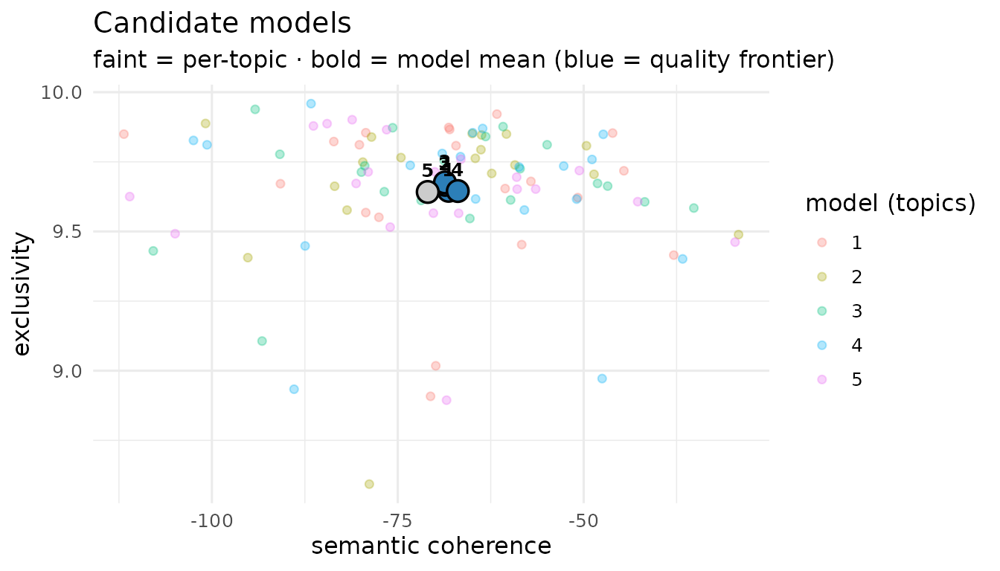
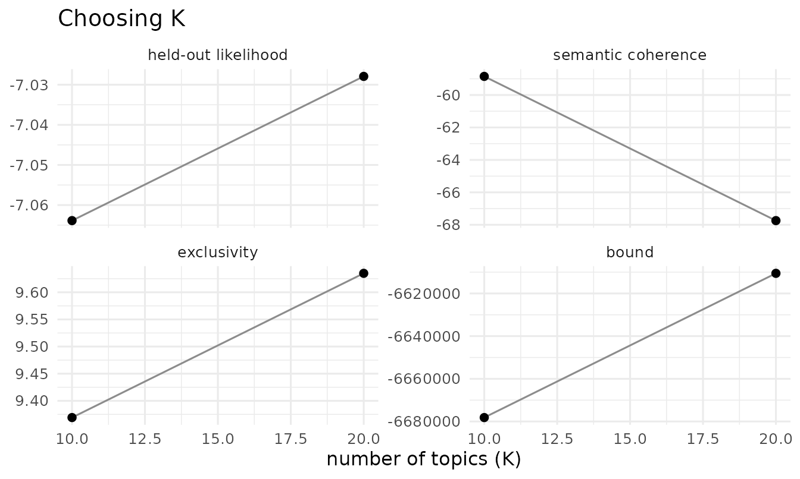
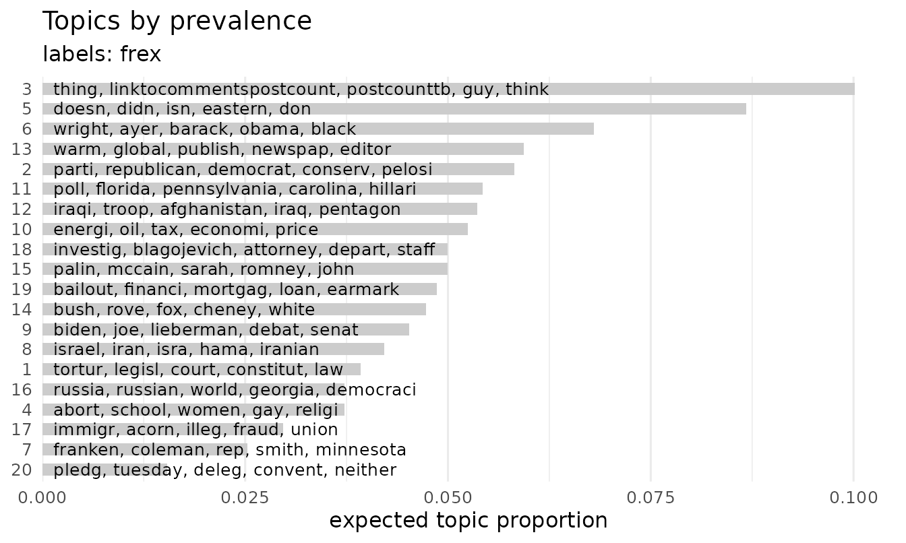
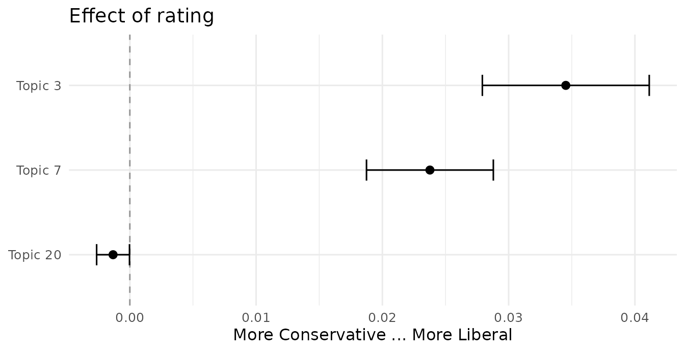
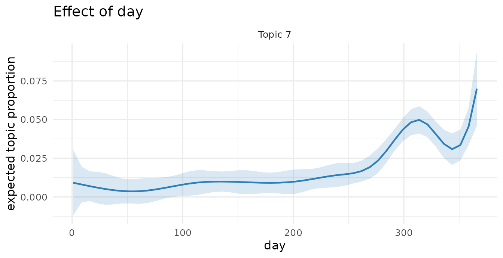
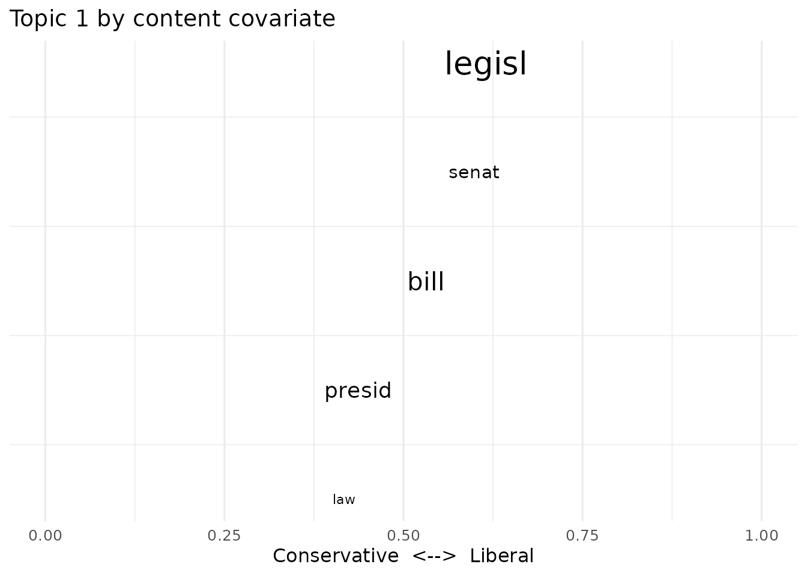
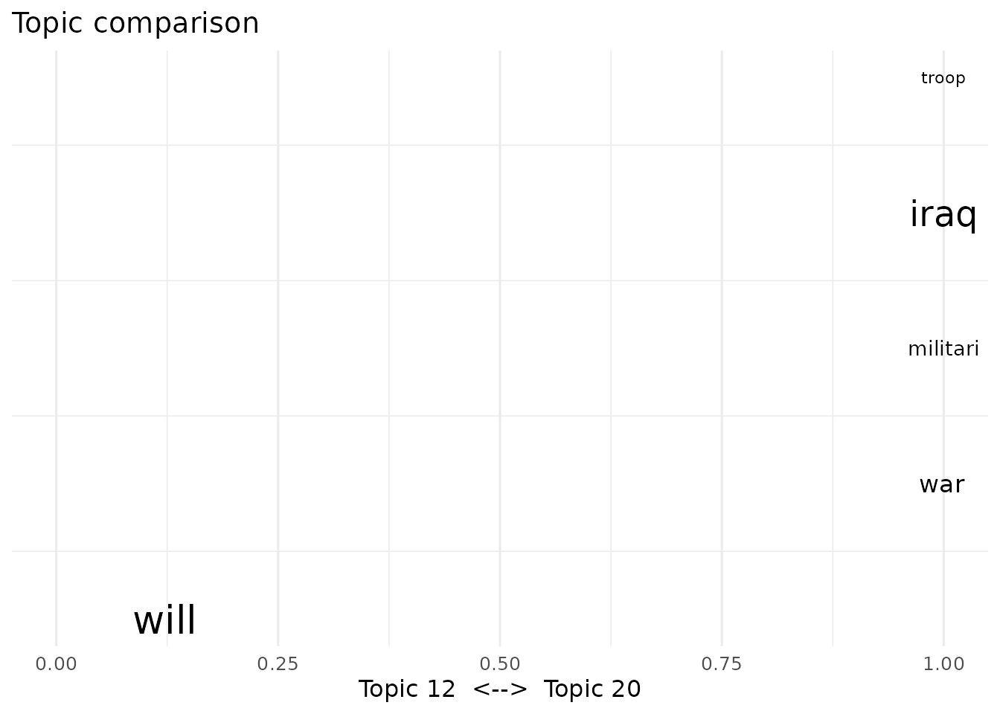
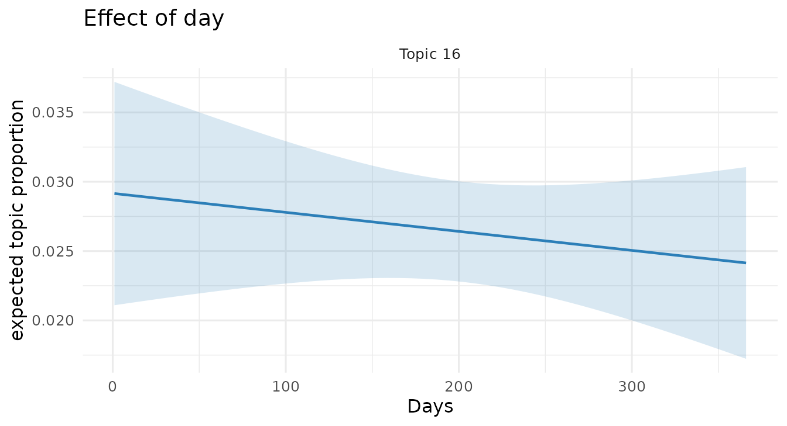
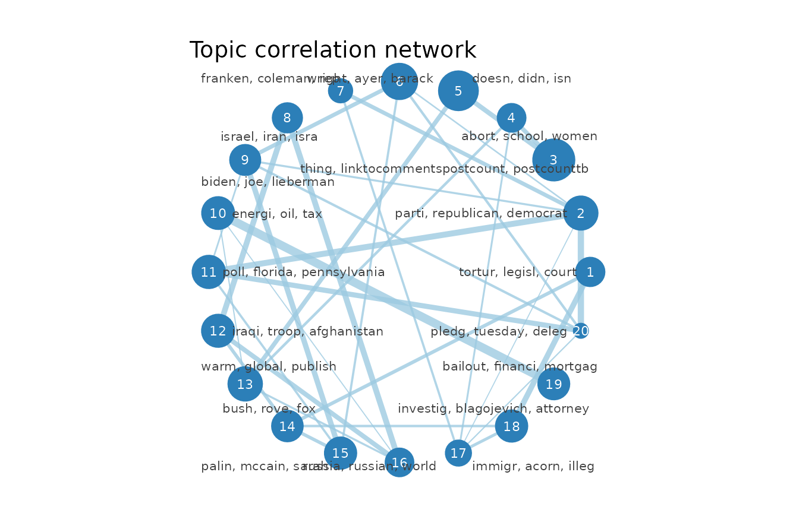

This vignette walks through the same analysis as the
stm package vignette (Roberts, Stewart &
Tingley), using the identical CMU 2008 political-blog corpus, but every
model is fit live here, because faSTM fits in seconds
where stm takes minutes. (The stm vignette
loads pre-computed objects to avoid the wait; faSTM does not need to.)
The code mirrors the stm vignette’s calls. Because each fit
is fresh, the topic numbers differ from the original. The
workflow, not the specific topics, is what carries over.
A note on the plots. faSTM’s
plot()methods are restyled (ggplot), re-defaulted versions of stm’s, not pixel-for-pixel copies. Two differences worth knowing.plot(type = "summary")ranks words by FREX (stm defaults to highest-probability, so passlabeltype = "prob"for stm-style labels). AndplotModels()draws stm’s full per-topic cloud (faint, one point per topic coloured by model) and overlays bold model-mean points with the non-dominated models highlighted on a “quality frontier”, so you see both the spread and the summary at once.
Ingesting data
faSTM reads prepared text from
quanteda/tidytext rather than tokenizing
itself. A typical preparation:
library(quanteda)
dfmat <- corpus(my_data, text_field = "documents") |>
tokens(remove_punct = TRUE) |>
tokens_remove(stopwords("en")) |>
dfm() |>
dfm_trim(min_termfreq = 5)
corpus <- as_corpus(dfmat) # quanteda docvars become the metadataFor this vignette we use the bundled poliblog corpus (the
stm vignette’s poliblog5k), already
prepared:
Estimating the structural topic model
The headline call mirrors the stm vignette exactly.
Topic prevalence varies with rating and a smooth function
of day:
poliblogPrevFit <- stm(out$documents, out$vocab, K = 20,
prevalence = ~ rating + s(day), data = out$meta,
init.type = "Spectral", seed = 2138)That fit took seconds, not minutes.
Model selection and search
selectModel() fits several models from different
initializations and keeps the ones on the semantic-coherence /
exclusivity frontier; plotModels() shows them. (Reduced to
a few candidates here to keep the vignette quick.)
poliblogSelect <- selectModel(out$documents, out$vocab, K = 20, N = 5,
prevalence = ~ rating + s(day), data = out$meta, seed = 2138)
plotModels(poliblogSelect)
searchK() sweeps the number of topics, reporting
held-out likelihood, semantic coherence, and exclusivity. It also
parallelizes across K:
storage <- searchK(out$documents, out$vocab, K = c(10, 20),
prevalence = ~ rating + s(day), data = out$meta, cores = 2)
plot(storage)
Interpreting topics
Top words by probability, FREX, lift and score:
labelTopics(poliblogPrevFit, c(3, 7, 20))
#> Topic 3:
#> Highest Prob: think, peopl, like, know, say, just, thing
#> FREX: thing, linktocommentspostcount, postcounttb, guy, think, realli, someth
#> Lift: digbyi, digbi, dday, linktocommentspostcount, postcounttb, bunch, nobodi
#> Score: linktocommentspostcount, postcounttb, think, guy, know, thing, digbi
#> Topic 7:
#> Highest Prob: race, senat, campaign, rep, new, gop, dem
#> FREX: franken, coleman, rep, smith, minnesota, dem, race
#> Lift: franken, coleman, minnesota, smith, mitch, norm, mcconnel
#> Score: franken, coleman, dem, ballot, race, gop, rep
#> Topic 20:
#> Highest Prob: will, convent, pledg, deleg, tuesday, possibl, nation
#> FREX: pledg, tuesday, deleg, convent, neither, possibl, total
#> Lift: pledg, tuesday, super, clarifi, award, deleg, counter
#> Score: deleg, pledg, convent, will, clinton, tuesday, superRepresentative documents per topic, displayed as wrapped quotes:
# bundled poliblog text is short (~50-char) snippets, so a few fill the panel
thoughts3 <- findThoughts(poliblogPrevFit, texts = out$meta$text, n = 4, topics = 3)$docs[[1]]
plotQuote(substr(thoughts3, 1, 200), width = 60, main = "Topic 3")Topics ranked by their expected prevalence in the corpus:
plot(poliblogPrevFit, type = "summary")
Covariate effects on topic prevalence
estimateEffect() regresses topic proportions on the
covariates, propagating topic-estimation uncertainty (the method of
composition):
out$meta$rating <- as.factor(out$meta$rating)
prep <- estimateEffect(1:20 ~ rating + s(day), poliblogPrevFit,
meta = out$meta, uncertainty = "Global")
summary(prep, topics = 1)$tables[[1]]
#> Estimate Std. Error t value Pr(>|t|)
#> (Intercept) 0.003110247 0.011273929 0.2758796 7.826520e-01
#> ratingLiberal 0.019163938 0.002681926 7.1455876 1.025466e-12
#> s(day)1 0.070682672 0.022324691 3.1661209 1.554173e-03
#> s(day)2 0.040550331 0.013253774 3.0595309 2.228615e-03
#> s(day)3 0.008164232 0.016191905 0.5042169 6.141312e-01
#> s(day)4 0.056183044 0.013280035 4.2306397 2.372066e-05
#> s(day)5 0.046183409 0.014444773 3.1972402 1.396160e-03
#> s(day)6 -0.006539875 0.013587211 -0.4813258 6.303061e-01
#> s(day)7 0.032304028 0.014188997 2.2766956 2.284658e-02
#> s(day)8 0.007149116 0.016549919 0.4319729 6.657798e-01
#> s(day)9 0.057596195 0.017602506 3.2720453 1.074990e-03
#> s(day)10 0.007694539 0.016629381 0.4627075 6.435942e-01Difference in topic prevalence between Liberal and Conservative blogs:
plot(prep, covariate = "rating", topics = c(3, 7, 20), model = poliblogPrevFit,
method = "difference", cov.value1 = "Liberal", cov.value2 = "Conservative",
xlab = "More Conservative ... More Liberal")
A topic’s prevalence over time (smooth term in day):
plot(prep, "day", method = "continuous", topics = 7, model = poliblogPrevFit)
Topical content
Letting word use within topics vary by rating
(a SAGE content covariate), then comparing the two sides’ vocabulary for
a topic:
poliblogContent <- stm(out$documents, out$vocab, K = 20,
prevalence = ~ rating + s(day), content = ~ rating,
data = out$meta, init.type = "Spectral", seed = 2138)
plot(poliblogContent, type = "perspectives", topics = 1)
Comparing the vocabulary of two topics:

Interactions
Prevalence can interact covariates (here rating with
time), and the effect plot can condition on a moderator value:
poliblogInteraction <- stm(out$documents, out$vocab, K = 20,
prevalence = ~ rating * day, data = out$meta,
init.type = "Spectral", seed = 2138)
prepInt <- estimateEffect(c(16) ~ rating * day, poliblogInteraction,
metadata = out$meta, uncertainty = "None")
plot(prepInt, covariate = "day", model = poliblogInteraction, method = "continuous",
xlab = "Days", moderator = "rating", moderator.value = "Liberal", topics = 16)
More visualization
A word cloud for a topic, the topic-correlation network, and the convergence trajectory:
cloud(poliblogPrevFit, topic = 7)
plot(topicCorr(poliblogPrevFit))
plot(poliblogPrevFit$convergence$bound, type = "l",
ylab = "Approximate Objective", main = "Convergence")Out-of-sample documents
New documents get topic proportions by holding the fitted topics fixed:
theta_new <- fit_new_documents(poliblogPrevFit, poliblog)
dim(theta_new)
#> [1] 5000 20Everything above is the stm vignette’s workflow, run on
faSTM: the same function names and arguments, the same corpus, and
faSTM’s restyled, re-defaulted plots (see the note up top). It fits in
seconds, with an estimateEffect that propagates topic
uncertainty. Existing stm scripts port with little more
than the changes shown here.